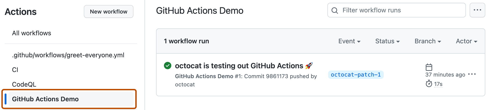
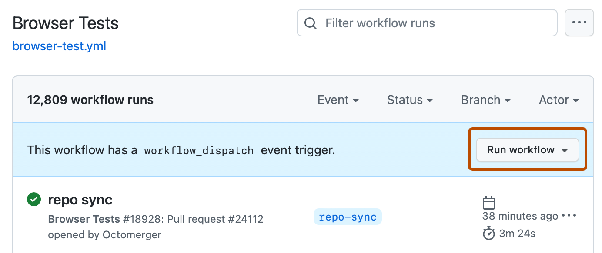

-
On GitHub, navigate to the main page of the repository.
-
Under your repository name, click Actions.

-
In the left sidebar, click the name of the workflow you want to run.

-
Above the list of workflow runs, click the Run workflow button.
Note
To see the Run workflow button, your workflow file must use the
workflow_dispatchevent trigger. Only workflow files that use theworkflow_dispatchevent trigger will have the option to run the workflow manually using the Run workflow button. For more information about configuring theworkflow_dispatchevent, see Events that trigger workflows.
-
Select the Branch dropdown menu and click a branch to run the workflow on.
-
If the workflow requires input, fill in the fields.
-
Click Run workflow.